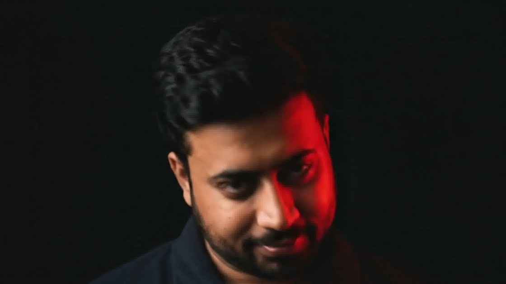

Available for hire
Full Stack
Developer
Building digital experiences that convert.
Zubair AI
Edge assistant
Can you build a Next.js store?
Yes — Next.js storefronts are my core stack. Here is a build I wrote up, or grab a slot and we can scope yours.
/blog/next-js-store-build
Schedule a Call
Hire Me
Verified intake
Project
E-commerce
AI timeline
4-7 weeks (based on store complexity)
Email
✓
Domain verified
Human check
✓
Passed
Send Message
Message sent! I'll reply within 24 hours.
Under the hood
01
6 languages
full RTL
next-intl · Urdu, Hindi, Russian, Spanish, German
02
Static at
the edge
Cloudflare Workers · OpenNext · Workers AI
03
63 tests
green
CSP · Firestore rules · signed redirects

Zubair Hussain
Building digital experiences that convert.
zubair-hussain-portfolio.detroonshah.workers.dev